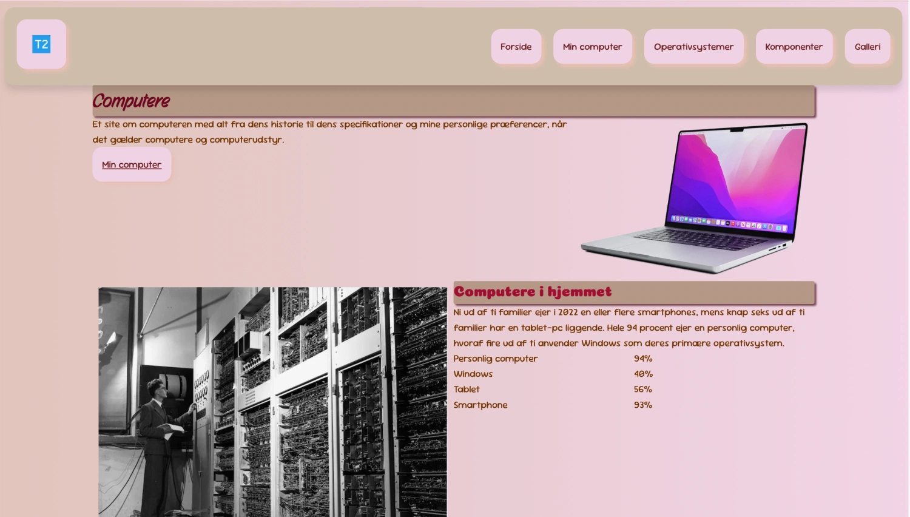
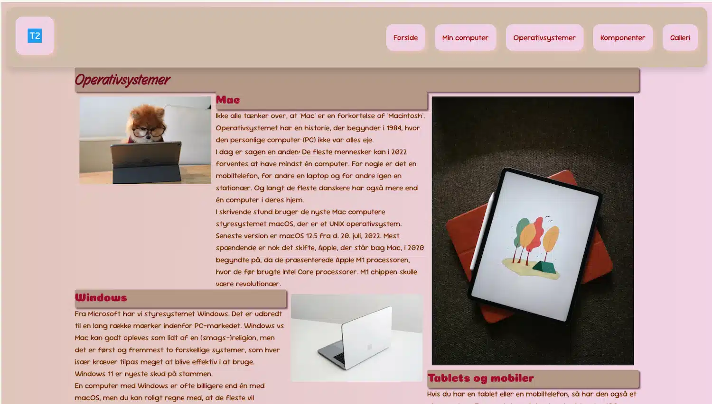
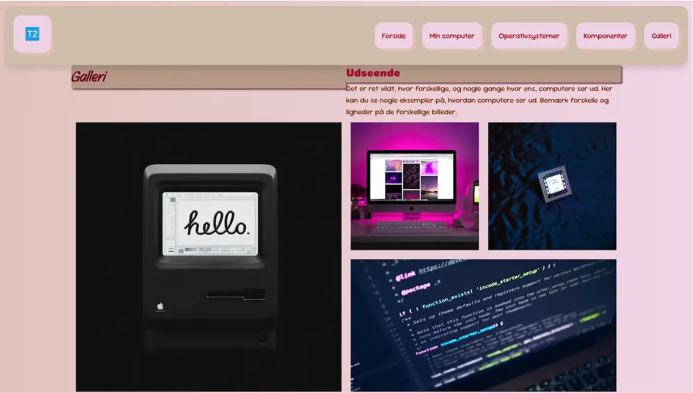

Mobilesite
Løsning
Det her var min første site. Opgaven gik ud på at lave et responsivt website bestående af fem HTML sider, der er opbygget ud fra et udleverede wireframe og layoutdiagram. Jeg udviklede sitet med mobile first princippet og er efterfølgende tilpasset desktop igennem media queries.

Proces
Arbejdsprocessen startede med gennemgang af det udleverede wireframe og layoutdiagram for at få overblik over sidernes struktur og indhold. Herefter blev der oprettet en layout.css og en generel.css, som blev linket til alle sider. Desuden blev der tilføjet media queries til desktop, samtidig med at sitet blev testet og justeret i browseren.

læring
Opgaven har lært mig princippet om mobile first design, CSS Grid og media queries. Jeg har derfor lært at arbejde mere struktureret med layout og at følge et fast wireframe og layoutdiagram.
